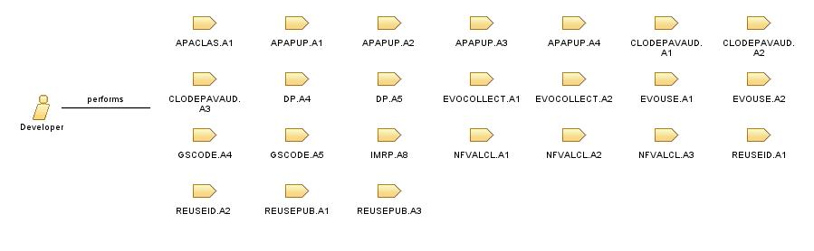

Role: Developer
Developer is a person concerned with facets of the software development process: researching, designing, implementing and testing software. They may, also, take part in design, computer programming, or software project management.
Relationships

Modifies
A list of potentially reusable artefacts to be further investigated
A list of reusable artefacts to be published to the repository
App VM execution trace or profile
Changed artefact
Conclusions about goal fulfilment
Decision on SLA success - failure
Development environment
Functional Benchmark VM
Incidence log
Modernized code
New artefacts published in the repository
Profiles on the execution hardware of the individual benchmark tests
Prototype of each sprint
Recorded development tasks and changes linked to these tasks
Statistical raw data regarding resource availability
Statistics for provider included in provider models
Target specific application code
Tested Prototype of each sprint
Trained prediction classifier
Updated artefacts in the repository
Valid resources to be monitored
Virtual Machine in which the component will be executed